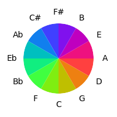
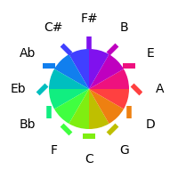

![[image of music]](21\lily-9d0df7da.png)
Modern musical notation has a rich and interesting history; it is generally based on the concept of scales, so that vertically-arranged notes on a staff (a set of horizontal grid lines) from the indicated key signature correspond to the desired scale.
Applying the hues to the heads of the notes gives the following:

![[image of music]](5f\lily-835c9c49.png)
![[image of music]](00\lily-a2f1a6c0.png)
Applying the hues to the heads of the notes and indicating the rotation around the torus with a line gives the following:

![[image of music]](46\lily-b77e8152.png)
![[image of music]](c7\lily-04ac6a3d.png)
© David Fraser 2013